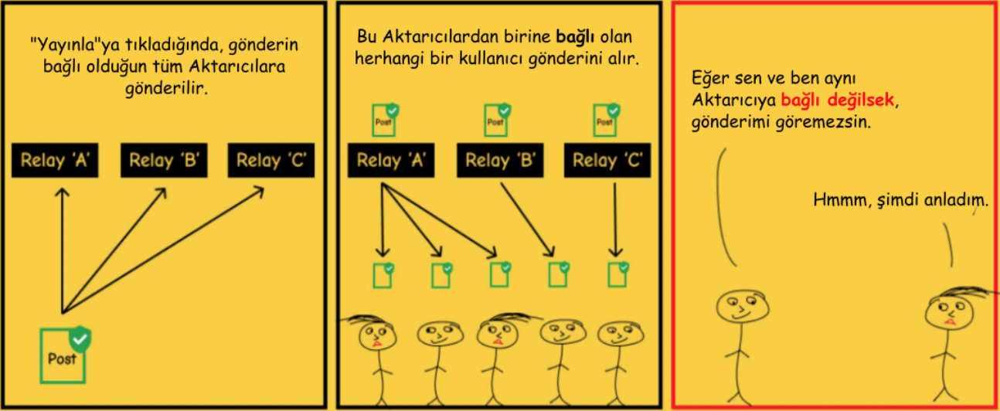

Şimdiye Kadar Yazılmış En Basit Bitcoin Kitabı
NOSTR
NASIL ÇALIŞIR?
Nostr'un iki parçası vardır:
İstemciler ve Aktarıcılar (Relays).
İSTEMCİ
, nostr protokolü üzerinde çalışan
bir ARAYÜZdür
(uygulama veya website).
Sizin ve takip ettiğiniz kişilerin gönderilerini gördüğünüz
yerdir
(twitter'ın gönderilerinizi paylaştığınız ve başkalarının
gönderilerini okuduğunuz bir arayüz olması gibi, ancak twitter
merkezidir ve gönderileri sansürler.)
AKTARICI, bir SUNUCU ve VERİTABANIDIR.
İsteyen herkes bir aktarıcı çalıştırabilir, bu da nostr'u
merkeziyetsiz yapar.
Notlarınızın gönderildiği, depolandığı ve istemciler tarafından
alındığı yerdir.
Birçok aktarıcı vardır ve hangilerine bağlanacağınızı
seçebilirsiniz. Bazıları ücretsiz, bazıları ücretlidir.
Bir mesaj gönderdiğinizde, bağlı olduğunuz aktarıcılara
yayınlanır.
İstemciler bağlı oldukları aktarıcıları sorgular ve ardından bu
aktarıcılarda barındırılan mesajları görüntüler.
